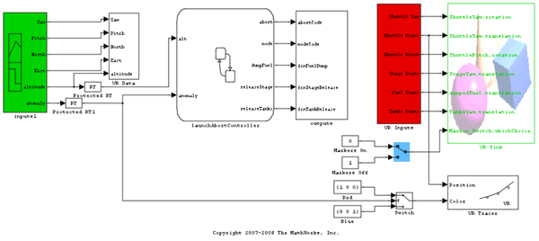
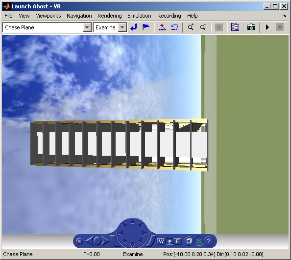
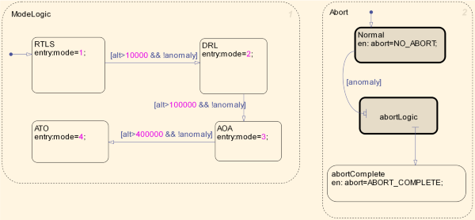
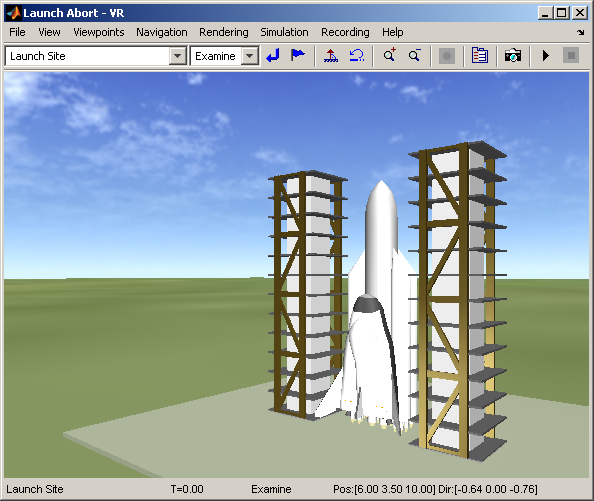

起動停止システムのモデル化
これは、起動停止システムのモデルです。ロケットは宇宙空間に向かって発射されます。発射時に異常や不具合が発生すると、操作が停止されてロケットは地上に戻されます。
目次
説明
Launch Abort Controller ステート チャートは、モード ロジックの制御と起動停止動作の制御のために使用されます。このステート チャートは、ModeLogic と Abort の 2 つの並列ステートで構成されています。Mode Logic ステートでは、ロケットは次の 4 つのステートのいずれかになります。
- RTLS: 射場に戻ります。
- DRL: 射程に沿って着陸します。
- AOA: 1 周回して着陸します。
- ATO: 軌道投入を中断します。
ロケットは、ロケットの高度に基づいて特定のモードから次のモードに遷移します (単純化)。
  2 番目の並列ステートは、異常が検出された際のロケットの動作を制御します。異常が発生すると、システムは abortLogic サブステートに遷移し、システムの現在の状態に応じて次の 3 つのアクションが起こされます。
- 燃料の排出
- タンクの切り離し
- ステージの切り離し
Stateflow® はこれらのイベントの発生スケジュールを管理しますが、燃料、タンク、およびステージのサブシステムは Simulink® でモデル化されます。これは簡略化された例なので、サブシステムのダイナミクスはここではモデル化されません。しかし、燃料の排出、タンクの切り離し、およびステージの切り離しの様子は、Simulink® 3D Animation™ で確認することができます。
参照
Nelson, D. K., Bradford, J. E., Olds, J. R., "Abortability Metrics: Quantifying Intact Abort Mode Availability for Reusable Launch Vehicles," AIAA-2006-7293, Space 2006, San Jose, California, September 19-21, 2006.